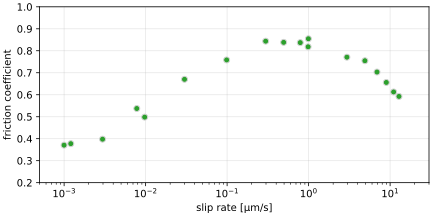

Rock friction experiments#
This section briefly summarises a few key concepts in rock friction experimentation, which are presumed to be well understood for the remainder of this User Guide.
First of all, “friction” is a term that is used rather loosely to refer to the shear resistance of a fault interface. While this term suggests purely brittle deformation, it is not necessarily implied that non-brittle processes do not contribute to the observed behaviour. In fact, detailed analyses of microstructure samples and theoretical modelling suggests that “non-brittle” processes (like fluid-rock chemical reactions, or crystal plasticity) play a dominant role in controlling the shear resistance of faults, even at room ambient conditions (see e.g. the Chen-Niemeijer-Spiers model). Hence, while remaining entirely agnostic to the underlying processes, “friction” in most cases simply refers to the ratio of the shear stress to normal stress. When interpreted in terms of Coulomb mechanics, this informal definition also implies that cohesion is negligible. In other words, assuming the following criterion for fault failure:
it is often assumed that the cohesion \(C=0\), such that the friction coefficient \(\mu = \tau / \sigma_n\). This is sometimes more precisely referred to as an effective friction coefficient (typically denoted \(\mu'\)). Whether the assumption of \(C=0\) holds true in practice remains to be tested, especially when longer time-scales are considered[1].
What is also not explicit in Eq. (1), but is well-known in the community, is that the friction coefficient \(\mu\) is not a constant; it depends notably on the rate of deformation (sliding) of the fault, temperature, time, fault material, and many other factors. There are several models that predict some of these dependencies (see Forward models), known as “friction models”. The friction models are parameterised, and it is the purpose of many friction studies to systematically measure/infer these parameters across a range of experimental conditions. Below, I describe common experimental techniques to study fault “friction”.
Steady-state tests#
One of the most straightfoward means of investigating the variation of the friction coefficient, is by deforming a laboratory fault until steady-state sliding is achieved. In this context, “steady-state” means no change in the sliding rate of the fault (zero time derivative) as well as no change in the measured shear stress. The resulting value of the (effective) friction coefficient is recorded, and the experiment is repeated under different conditions, e.g. a change in temperature, normal stress, or externally imposed sliding rate.
 
(Steady-state friction data of a halite-muscovite gouge mixture, deformed at room temperature and a normal load of 5 MPa. Data from Niemeijer & Spiers[2])
One of the most significant observations (also shown in the figure above), is that the steady-state friction coefficient varies systematically with the fault slip rate. Under some conditions, the friction increases with increasing slip rate, a phenomenon that is called velocity-strengthening (because the fault becomes “stronger” with increasing sliding velocity). The converse case is called velocity-weakening. It is widely thought that velocity-weakening is a prerequisite for earthquakes in nature.
Velocity-step tests#
One remarkable feature of many frictional materials, is that they display a rather curious transient response to an instantaneous step in the external loading velocity. This is most clearly seen in experiments where a fault is driven at a constant rate until steady-state is reached, after which this rate is stepwise increased or decreased. This protocol is called a “velocity-step test”. The study of the transient frictional response induced by a velocity-step has laid the foundation for much of our understanding of fault friction and earthquakes.
Stick-slip instabilities#
Slide-hold-slide tests#
References